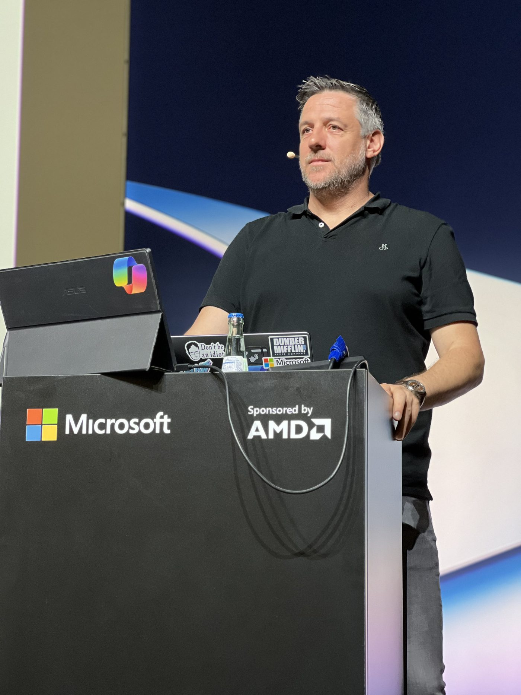

Speaker · Trainer · Storyteller — 20+ years in the Microsoft ecosystem
With over 20 years of deep expertise in the Microsoft ecosystem, Alex de Jong is one of the most sought-after Microsoft speakers and trainers in the world. Based in the Netherlands, Alex travels the globe delivering high-impact sessions for some of the biggest names in the industry — with Microsoft itself as his flagship client.
Alex holds multiple expert-level certifications across both Azure and Microsoft 365, backed by years of hands-on consulting experience running complex Microsoft projects for mid-market and enterprise organisations. He knows these platforms from the inside out — not just in theory, but from real deployments, real customers, and real challenges.
In recent years, Alex has become a leading voice on two of the hottest topics in enterprise technology: AI and security. Whether he's breaking down Microsoft 365 Copilot, Agents, or the latest in Microsoft Defender and Purview, Alex has a rare gift for turning complex technology into clear, compelling narratives that resonate with both technical and business audiences.
His YouTube channel has built a loyal global following of Microsoft professionals who tune in for the same reason audiences love his live sessions: Alex doesn't just present — he tells a story. His on-stage energy, signature storytelling style, and talent for making demos feel genuinely exciting have made him a firm audience favourite at events worldwide.
Expect a day that is fast-paced, insightful, and anything but boring.

On stage at a Microsoft event
Trainings, keynotes and advisory — let's talk.